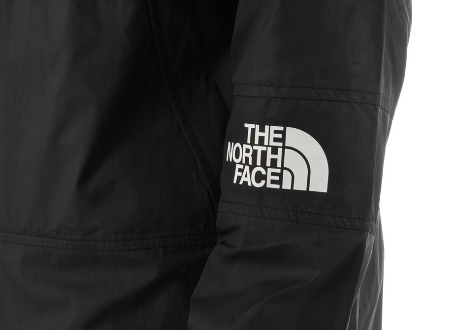

Heder 2
Heder 2
Heder 2
Linux Cmd 中文字小測試
A cruise ship is at sea. It is off Norway. There are 1,300 passengers on the ship. The ship stops working. It cannot move. The weather is bad. The wind blows fast. There are 8-metre waves. The ship moves from side to side. The people inside are in danger. Helicopters start moving the passengers from the ship to land. Some people go to hospital. The ship starts to work again. It is moving slowly to a port. Difficult words: cruise ship (a big ship which is like a hotel), off (at sea near land), port (a safe place for ships). You can watch the original video in the Level 3 section.
迪士尼全新真人版《小飛象》改編自1941年推出的迪士尼同名經典動畫，講述了生來因一雙大耳朵而遭人嘲笑的小飛象，在眾人的幫助下逐漸擁抱自己的與眾不同，成就一段逆風翱翔的暖心傳奇。一位前馬戲團明星，剛從戰爭前線歸來，霍特·法瑞爾(科林·法瑞爾飾)在一家艱難經營的馬戲團謀得一份工作，負責照顧剛出生的小象，帶著兩個善良的孩子，女兒米莉·法瑞爾(尼科·派克飾)和兒子喬·法瑞爾(芬利·霍賓斯飾)，兩個孩子和另外一個女孩瑪茜特(蔡慧泉飾)與小飛象成為朋友，幫助小飛象找到媽媽。當人們發現小象會飛後，馬戲團重複生機，更吸引到一個充滿心機的生意人文德維爾（邁克爾·基頓飾）的注意，他把小飛象雇傭到他的大型遊樂場Dreamland，與雜技演員柯萊特·馬錢特(伊娃·格林飾)做搭檔，人氣達到新高度，然而霍特·法瑞爾發現，遊樂場光鮮亮麗的背後，充滿種種見不得人的秘密。
# sum ijk LM

this is SC ~~
Header 2
Suspendisse potenti. Ut in luctus eros. Mauris pulvinar vehicula aliquet. Etiam imperdiet eleifend luctus. Duis ut justo nec eros ornare consectetur. Vestibulum convallis condimentum varius. Maecenas rutrum porta varius. Phasellus volutpat sem id sagittis luctus. Morbi vitae quam vitae nisi iaculis dignissim.
Header image originally by Miwok.
we will never let you follow me so close, you know>?
the last caption
hello world !